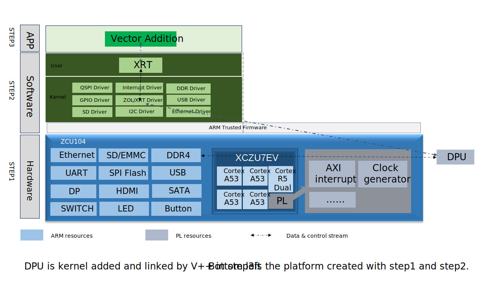

Vitis™ プラットフォームの作成チュートリアルxilinx.com の Vitis™ 開発環境を参照 |
ZCU104 での Vitis カスタム エンベデッド プラットフォームの作成¶
バージョン: Vitis 2022.1 + Vitis AI 2.0
注記: Vitis-AI 2.0 for Vitis 2022.1 は現時点ではご利用いただけません。Vitis-AI アプリケーションは、Vitis-AI for Vitis 2022.1 がリリースされたあと、すぐに更新される予定です。
このモジュールでは、ZCU104 用のカスタム Vitis エンベデッド プラットフォームを作成します。このプラットフォームでは、Vitis AI アプリケーションを含む Vitis アクセラレーション アプリケーションを実行できます。もちろん、一般的なエンベッド ソフトウェア アプリケーションもこのプラットフォームで実行できます。次のシステム全体の構造例は参照用です。

ZCU104 は検証済みのザイリンクス評価ボードであり、Vivado にプロセッシング システムのプリセットが含まれているため、完全なハードウェアを構築して XSA を生成するところから開始します。
ソフトウェア コンポーネントを準備するために、共通イメージを利用し、手順 1 でエクスポートした XSA ファイルに従って DTB ファイルを作成します。この後、プラットフォームをパッケージします。最後に、このカスタマイズされたプラットフォームをテストするため、このプラットフォームで Vitis AI アプリケーションを含むテスト アプリケーションをいくつか実行します。
カスタム プラットフォーム プランニング¶
作成するプラットフォームでは、最終的に次のアプリケーションを実行できるようにします。
Vector Addition などの Vitis アクセラレーションの例
Vitis AI アプリケーション
Vector Addition アプリケーションには、カーネル制御用に 1 x クロック、1 x 割り込み、1 x M_AXI、メモリ アクセス用に 1 x S_AXI が必要です。
Vitis AI アプリケーションでは、DPU が RTL カーネルとして統合されます。clk と clk2x の 2 つのクロックが必要です。200 MHz と 400 MHz のクロックを供給でき、タイミング クロージャを簡単に達成できます。割り込みも 1 つ必要です。DPU はメモリを多く必要とする IP なので、プラットフォームには複数の AXI HP インターフェイスを使用する必要があります。
ソフトウェア側では、プラットフォームで XRT、ZOCL パッケージを供給する必要があります。ホスト アプリケーションでは、XRT OpenCL API を使用してカーネルを制御できます。Vitis AI ソフトウェア フレームワークでは、XRT を使用して DPU を制御できます。ZOCL は、アクセラレーション カーネルと通信するカーネル モジュールで、デバイス ツリー ノードが必要なので、追加します。ほかの Vitis AI の依存関係も追加します。これらすべての機能は、ザイリンクスが提供する共通イメージで達成できます。これらの共通機能のほかに、GCC コンパイラを追加してアプリケーションのネイティブ コンパイルを実行し、Vitis AI デモ アプリケーション用の mesa-mega ドライバーを追加し、ネットワークがより高速に動作するようにするため dropbear を openssh に置き換える必要があります。
詳細手順チュートリアル¶
次のページから、プラットフォーム作成手順を示します。各ページで、プラットフォーム作成プロセスの主な手順が 1 つずつ説明されています。
手順 1: ハードウェア プラットフォームの作成Vivado を使用して、プラットフォームのハードウェア情報を含む XSA ファイルを生成します。
手順 2: Vitis プラットフォームの作成ソフトウェア コンポーネントを準備し、Vitis プラットフォームを作成します。
手順 3: Vitis アプリケーションの作成Vitis プラットフォームを検証するための単純なアプリケーションを作成します。
まずは、手順 1: ハードウェア プラットフォームの作成から始めます。
変更ログ¶
2022.1¶
このバージョンから、PetaLinux で Linux コンポーネントを構築する代わりに、ビルド済みの Linux 共通イメージを使用するようになりました。このイメージは、Vitis アクセラレーションに共通のほとんどの機能を備えており、プラットフォーム作成プロセスを迅速化させます。システムをカスタマイズするのに、PetaLinux ツールを利用する必要がある場合は、PetaLinux のカスタマイズ チュートリアルを参照してください。
新しく導入された
createdtsXSCT コマンドを使用することで、デバイス ツリーの生成フローを簡素化できます。
参考資料¶
プラットフォーム例
Vitis エンベデッド プラットフォーム ソース GitHub リポジトリの ZCU102 および ZCU104 ベース プラットフォームのソース コード
Copyright© 2022 Xilinx